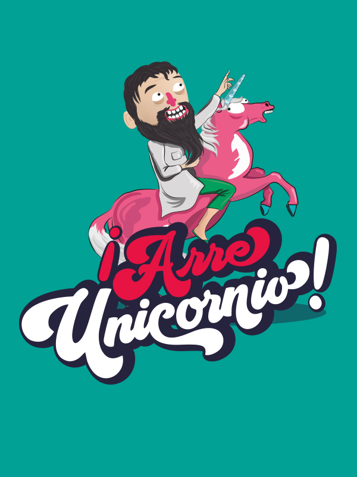

<!--<div class="estiloGeneral">
  <nav aria-label="breadcrumb">
    <ol class="breadcrumb">
      <li class="breadcrumb-item active" aria-current="page">{{'Home.Menu.Prensa' | translate }}</li>
    </ol>
  </nav>
</div>-->

<section class="light">
	<div class="container py-2">
		<div class="h1 text-center text-dark" id="pageHeaderTitle">My Cards Light</div>

		<article class="postcard light blue">
			<a class="postcard__img_link" href="#">
				
			</a>
			<div class="postcard__text t-dark">
				<h1 class="postcard__title blue">
          <a href="#">
            {{ 'Juegos.Arre' | translate }}
          </a>
        </h1>
				<div class="postcard__bar"></div>
				<div class="postcard__preview-txt">
          {{ 'arreUnicornio.resumen' | translate }}
        </div>
				<ul class="postcard__tagbox">
					<li class="tag__item play blue">
						<a mat-button [routerLink]="'/prensaArre'" class="menuComponent">
              <i class="fas fa-play mr-2"></i>
              {{'Prensa.Presskit' | translate }}
            </a>
					</li>
				</ul>
			</div>
		</article>
	</div>
</section>
